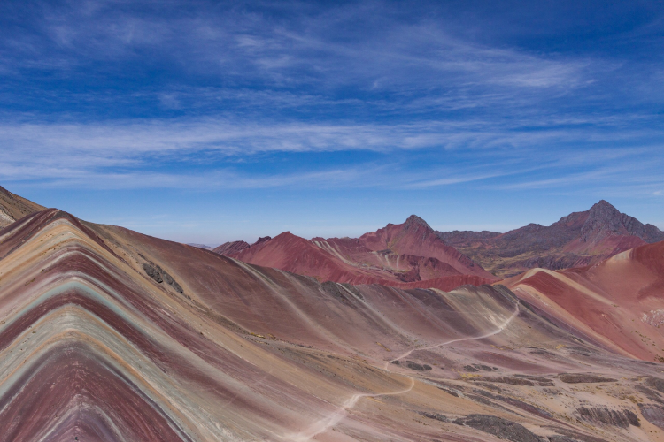

Cusco ― 標高3399m クスコ
クスコは昔、太陽神を崇拝するインカ帝国の首都でした。「クスコ」とはケチュア語で“ヘソ”を意味しており、これは大インカ帝国を築いた人々にとってクスコは、彼らの世界観の中心であったことを表しています。16世紀、ピサロ率いるスペイン人の征服者たちはインカの人々は山奥に追いやり、インカの人々が暮らしていた礎石の上に教会や邸宅を立てました。これがクスコの町に不思議なコントラストをつくり、建築様式を含む文化的価値が認められ、1983年にクスコは世界遺産に登録されました。クスコの郊外にはマチュピチュをはじめとしたインカ時代の建造物が多く残ります。大昔に滅んだとされるインカ文明ですが、毎年6月には南米三大祭りの1つであり、インカ時代の儀式を再現した“インティ・ライミ=太陽の祭り”が開かれ、クスコの住民はインカの民となって神聖な儀式に参加します。
クスコへの行き方
飛行機
リマからのフライトになります。出発時間は5：00～13：00ぐらいに集中しています。また、山岳地帯のため天候によるキャンセルや遅れが多いので、スケジュールは余裕をもった方がよいでしょう。リマ以外の国内線はラタム航空とペルビアンがアレキパから、プエルト・マルドナードからはラタム航空とスターペルーが、フリアカからもラタム航空のフライトがある。ボリビアのラパス間はラタム航空とアマゾナス航空が結んでおり、いずれも1日1便で所要時間は約1時間です。
長距離バス
最も一般的なバス路線は、リマからイカ、ナスカ、アバンカイを経由してクスコに至るルートです。毎日シバ社が5便、クルス・デル・スールが2便あり、いずれも午後出発です。直行便ではありませんが、リマからアレキパ、アレキパからクスコに行くこともできます。クスコ～プーノ間を観光できるバス、インカ・エクスプレスInka Expressもあり、クスコ、プーノともに6：40出発、17：00到着です。
所要時間と料金
リマ～ナスカ（直行便） 所要時間：約21時間30分 料金：S/80～185
リマ～アレキパ 所要時間：15時間30分～18時間 料金：S/49～185
アレキパ～クスコ 所要時間：10時間～11時間30分 料金：S/29～140
プーノ～クスコ 所要時間：約6時間30分 料金：S/40～130(1ソル=約30円)
鉄道
クスコ～プーノ、クスコ～マチュピチュ間は列車が運行しています。
クスコとマチュピチュを結ぶ列車は、クスコ近郊のポロイ駅Estación Poroyを発着。ペルーレイルが毎日4便、インカ・レイルが1便あります。ポロイ駅へはクスコから車で15分ほどで、タクシーならS/20程度です。
クスコ～プーノ間はペルーレイルが所有する高級寝台列車のベルモンド・アンデアン・エクスプローラーBelmond Andean Explorerが運行しています。この列車はクスコ～プーノを1泊2日で楽しむ旅ができ、さらに2泊3日でアレキパまで行くプランもあります。
クスコの見どころ
ウルバンバ Urbamba
ウルバンバ渓谷はクスコから北西に約80km、コレクティーボと呼ばれる市内バスで1時間半弱の場所にあります。クスコに比べて標高が低く（2871m）、年間を通して穏やかな気候のため、果物が栽培され、特に雨季の終わりごろには色とりどりの花が咲き乱れます。クスコ市民にとってウルバンバは保養地であり、テニスコート、サッカー場などを備えたTambo del Inkaをはじめ、プール付きペンションなどの宿泊施設もあります。また、キンタ・レストランという、地元の料理をビュッフェ形式で味わえるオープンエアのレストランも何軒かあります。マチュピチュのツアーでは、ウルバンバや周辺のホテルに宿泊することが多いです。
ビニクンカ Vinicunca
ビニクンカは近年地球温暖化により氷が溶けて現れた新しい観光地で、赤・茶・青・白の鮮やかな配色が山肌に連なる光景が話題となり、近年知名度が上がっています。ナショナル・ジオグラフィック誌でも「死ぬまでに訪れるべき100箇所」に選定されました。ビニクンカとはケチュア語で”7色の山”を意味しており、レインボーマウンテン(Rainbow Mountain)と呼ばれています。クスコから約140km南東、車で3時間半の場所に位置しており、レインボーマウンテンが見下ろせる標高5029mのビニクンカ(Vinicunca)までは、片道1時間半の登山になります。訪れるにはクスコ市内の数多くの代理店が扱っているツアーに参加することが一般的です。ツアーはクスコを5：00発、戻りは19：00、朝食と昼食付きで$40ほどです。
